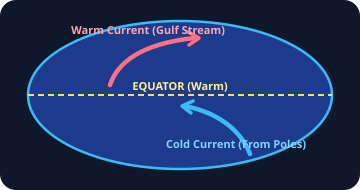
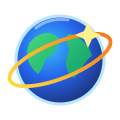

- ✓Mercator Projection: Preserves shape & direction (great for sailors), but exaggerates polar areas (Greenland looks bigger than India, though India is larger!).
- ✓Robinson Projection: Balanced compromise between size and shape distortion.
- ✓Map Colour Language: Blue = water; Green = plains; Yellow/Brown = plateaus; Dark brown = high mountains; Light yellow = deserts; White = ice/glaciers.

SubjectGeography

ClassGrade 8

BoardNCERT
ChapterPart 2 • Ch. 1

Est. Time15–20 min
- ✓Earth is an oblate spheroid — every flat map projection has some distortion.
- ✓Oceans cover 71% of Earth, hold 97% of water, and plankton give ~50% of our oxygen!
- ✓Tibetan Plateau = Roof of the World / Third Pole; Antarctica = Largest cold desert.
- ✓Sahara dust carries phosphorus across the Atlantic to fertilize the Amazon!
 What You'll Learn
What You'll Learn
- ✓Mercator vs Robinson Map Projections & Map Colours
- ✓5 Oceans, Gulf Stream, Mariana Trench & Great Barrier Reef
- ✓Asia, Europe, Africa, South & North America, Australia
- ✓Suez Canal (1869), Straits, Bays, Gulfs & Climate Threats
Did You Know?
Two Steppe tortoises from the Eurasian Steppes became the first Earth creatures to travel around the Moon in 1968!
2. Oceans, Currents, Trenches & Waterways
- ✓Gulf Stream: Warm Atlantic current making Western Europe & UK milder than Canada at the same latitude.
- ✓Mariana Trench: Deepest trench (Challenger Deep >11,000 m); bacteria make food via chemicals.
- ✓Great Barrier Reef: Off NE Australia (>2,000 km); "Rainforests of the Sea" (25% of ocean species).
- ✓Suez Canal (1869): Links Red Sea & Mediterranean — shortest sea route India ↔ Europe.

Warm Currents (Equator → Poles) & Cold Currents
 4. CHS Quick Superlatives Table
4. CHS Quick Superlatives Table
| Superlative | Name | Key Fact |
|---|---|---|
| Deepest Trench | Mariana Trench (Challenger Deep) | >11,000 m in Pacific Ocean |
| Largest Bay | Bay of Bengal | World's largest bay (east of India) |
| Highest & Largest Plateau | Tibetan Plateau | >4,500 m; "Third Pole" |
| Longest River / Largest by Volume | Nile (6,650 km) / Amazon | Nile flows North; Amazon flows East |
| Largest Overall / Hot Desert | Antarctica / Sahara | Antarctica = cold desert (>14M sq km) |
 Key Terms
Key Terms
Oblate Spheroid
Mercator vs Robinson
Plankton
Permafrost
Suez Canal (1869)
Fast Fashion
Third Pole
 Quick Revision
Quick Revision
- ✓Deserts receive <25 cm rain/year (~1/5th of Earth's land).
- ✓Green = plains, Dark brown = mountains, Light yellow = deserts.
- ✓Urals separate Asia & Europe; Alps feed Rhine & Danube.
